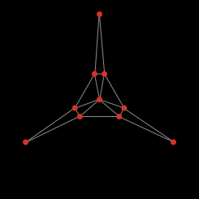

![[color chart]](images/colors.jpg)
下面的材料解释NetLogo编程的一些重要特征。
材料中经常提及的代码实例（Code Example）在模型库的Code Example部分。
NetLogo世界由主体(agent)构成，主体是能执行指令的个体。每个主体都同时执行各自的行为。
NetLogo中有四类主体：海龟、瓦片、链和观察者。
海龟是在世界中移动的主体，世界是2维的，是由瓦片组成的网格。每个瓦片是一块正方形的“地面”（ground）,海龟在它上面移动。链是连接两个海龟的主体。观察者没有具体位置，想象成它俯视着整个由海龟和瓦片组成的世界。
当NetLogo启动后没有任何海龟。观察者可以创建新海龟，瓦片也可以创建新海龟。（瓦片不能移动，除此之外与海龟和观察者一样，也是“活的”）。
瓦片有坐标。坐标（0，0）处的瓦片称为原点（origin），其他瓦片的坐标就是与原点的水平和垂直距离。瓦片的坐标用pxcor 和 pycor表示，像标准坐标平面一样，向右移动pxcor 增加，向上移动pycor 增加。
瓦片的总数由min-pxcor, max-pxcor, min-pycor, 和 max-pycor 的设置决定。NetLogo启动后， min-pxcor, max-pxcor, min-pycor, 和 max-pycor分别是-16，16，-16和16。也就是说 pxcor 和 pycor 的范围都是从-16到16，因此共有33*33=1089个瓦片。（通过Setting按钮，可以改变瓦片数）。
海龟也有坐标： xcor 和 ycor。瓦片的坐标总是整数，但海龟的坐标可以有小数，这意味着海龟可以位于瓦片上的任何一点，不一定恰好在瓦片的中心。
链只有两个端点（每个端点是一个海龟），没有坐标。链出现在两个端点之间，沿着可能的最短路连接，这意味着有时候甚至要沿世界回绕。
瓦片世界的连接方式可以改变。默认情况下，世界是一个环面（torus），无边，但回绕 -- 因此当海龟移出边界时消失了，又出现在对面的边界，这也使得每个瓦片都有相同数目的“邻元”瓦片。一个位于世界边缘的瓦片，它的有些邻元在对面的边上。可以使用Settings按钮改变回绕设置。如果禁止某方向（x或y）的回绕，世界就是有界的。边界上的瓦片邻元少于8个，海龟也移不出边界。
NetLogo命令和报告器告诉主体做什么。命令（command）是主体执行的行动。报告器（reporter）计算并返回结果。
多数命令由动词开头（"create", "die", "jump", "inspect", "clear"），而多数报告器是名称或名词短语。
NetLogo内建的命令和报告器叫做原语 primitives。The NetLogo Dictionary 完整列出了内置命令和报告器。
你自己定义的命令和报告器称为例程。每个例程有一个名字，前面加上关键词 to 或 to-report，取决于这是一个命令过程还是一个报告过程。 关键词end 标志例程的结束。定义了例程后，就可以在程序的其他任何地方使用它。
许多命令和报告器有输入参数（inputs），就是命令或报告器执行动作所需的一些值。
例子：两个命令例程：
to setup
clear-all
create-turtles 10
reset-ticks
end
to go
ask turtles [
fd 1 ;; forward 1 step
rt random 10 ;; turn right
lt random 10 ;; turn left
]
tick
end
使用分号给程序增加注释，注释让程序更容易阅读和理解。
在这个程序中，
setup 和 go 可以被其他例程或按钮调用。
许多NetLogo模型有一个一次性按钮调用一个名为setup的例程，还有一个永久性按钮调用一个名为go的例程。.
在NetLogo里必须指定每条命令由哪个/哪些主体执行，包括海龟、瓦片、链和观察者。(如果不指定，则由观察者执行)。在上面的代码中，观察者使用ask 让所有海龟执行[ ] 中的命令。
clear-all 和 create-turtles 只能由观察者执行。 fd,只能由海龟执行。其他一些命令和报告器，例如 set 和 ticks, 可以由不同类型的主体执行。
定义例程时还有一些高级特征可以使用。
你的例程也可以像原语一样有输入参数。要定义接受输入的例程，需要在例程名后面的[ ]中列出输入参数名。例如：
to draw-polygon [num-sides len] ;; turtle procedure
pen-down
repeat num-sides [
fd len
rt 360 / num-sides
]
end
在程序的其他地方，你可以让每个海龟以自己的who number为边长画出一个正8边形。
ask turtles [ draw-polygon 8 who ]
就像命令一样，也可定义自己的报告器。这需要做两件特别的事情，一是使用 to-report 而不是 to 开始例程定义；二是在例程体中，使用 report 返回你要报告的值。
to-report absolute-value [number]
ifelse number >= 0
[ report number ]
[ report (- number) ]
end
变量用来存储值（例如数字）。变量可以是全局变量、海龟变量或瓦片变量。
一个全局变量只有一个值，任何主体都可访问它。
对于海龟变量，每个海龟都有一个自己的值。对于瓦片变量，每个瓦片都有一个自己的值。
有些变量是NetLogo内置的。例如，所有海龟都有一个 color 变量，所有瓦片都有一个 pcolor 变量（瓦片变量以p开头，以免与海龟变量混淆）。如果你设置这些变量，海龟或瓦片就变色。
其他内置海龟变量包括 xcor, ycor, 和 heading。其他内置瓦片变量包括 pxcor 和 pycor。有一个完整的列表 here.)
你可以定义自己的变量。通过创建开关和滑动条创建全局变量，或者在程序的开头使用 globals 关键字，像这样：
globals [score]
使用 turtles-own , patches-own 和 links-own 定义自己的新海龟变量、片变量和链变量。像这样：
turtles-own [energy speed] patches-own [friction] links-own [strength]
在模型里这些变量可以随便使用。使用 set 命令设置它们。（如果不设置的话，初值为0）
任何主体在任何时候都可以读取、设置全局变量。海龟可以读取、设置它所处瓦片的瓦片变量。例如代码:
ask turtles [ set pcolor red ]
使得每个海龟将所处的瓦片变为红色。（由于瓦片变量以这种方式被海龟更新，因此海龟变量和瓦片变量不能重名）。
其他情况下，当你要一个主体读取其他主体的变量时，使用 of。 例如：
show [color] of turtle 5 ;; prints current color of turtle with who number 5
除了将变量名与 of 一起使用外，还可使用复杂的表达式，例如:
show [xcor + ycor] of turtle 5 ;; prints the sum of the x and y coordinates of ;; turtle with who number 5
局部变量仅用在特定的例程或例程的一部分。使用 let 命令创建局部变量，该命令可在任何地方使用。如果在例程的最前面使用，则变量在整个例程中都存在。如果在[ ]中使用，例如在ask里面，它只在该[ ]内部存在。
to swap-colors [turtle1 turtle2] let temp [color] of turtle1 ask turtle1 [ set color [color] of turtle2 ] ask turtle2 [ set color temp ] end
很多NetLogo模型中，时间是分散步，叫做 models, time passes in discrete "ticks". NetLogo包含一个内置的计时器，你可以记录已经过去了多少时间。
计时器的目前值在视图上方显示。（你可以使用Settings按钮隐藏计时器，或者改变"ticks"为别的词。）
代码中，回复计时器的当前值，使用 ticks 返回。 tick命令使计时器前进1. clear-all 命令清除所有包括清空计时器。
当计时器被清空后，读或者改它都是错误。使用reset-ticks命令，当你的模型想要启动计时器的时候。
如果你的模型需要使用计时器为基础的更新，那么 tick 命令会通常更新视图。见View Updates.
使用reset-ticks 在你启动过程的最后。
使用 tick 在你运行过程的最后。
to setup clear-all create-turtles 10 reset-ticks end to go ask turtles [ fd 1 ] tick end
在多数模型中，计时器从0开始，一次加1，从整数到整数。但是，它也可能增加浮点值。
要使计时器增加一个小数的值，使用 tick-advance命令。这条命令使用一个数值型的输入，确定计时器增加多少时间。
一个典型的使用小数计时的用途是持续或者曲线运动。看，例如，模型库中的GasLab模型（在化学&物理模型中）。这些模型计算未来事件发生的准确时间，然后将计时器前进为准确的时间。
NetLogo有两种表示颜色的方式。第一种是使用0-140（不包括140）之间的数字。下面是一张NetLogo可用颜色范围的图。
这图表明：
代码示例： 这个颜色图是用NetLogo 的Color Chart Example 模型生成的.
如果使用的数不在0-140之间，则NetLogo重复增加或减去140直到符合范围。例如25是橙色，165，305，445等也是橙色，-115，-255，-395也是。当你设置海龟 color 或瓦片 pcolor时，自动做上述计算。如果在别处你需要做这样的运算，使用 wrap-color原语。
如果你要图上没有的颜色，就使用整数之间的值，例如26.5 是26和27的中间色。这并不是说你可以在NetLogo里使用任何颜色，NetLogo的颜色空间仅是全部颜色的一个子集，仅包括有限的固定的离散色调（hue）集合(图上每行是一个色调)。对每个色调可以减少亮度或减少饱和度，但不能同时减少亮度和饱和度。并且只有小数点后第一位有意义，因此颜色值四舍五入到0.1，例如26.5，26.52和26.58视觉上无区别。
Color primitives，颜色原语
有些原语与颜色打交道。
我们已经提过wrap-color 原语。
原语scale-color 将数值转换为颜色。
shade-of? 告诉我们两个颜色是否属于同一色调。例如shade-of? orange 27。
代码例子： Scale-color例子演示了scale-color原语的使用.
RGB Colors,RGB颜色
NetLogo第二种颜色表达方式是RGB(红/绿/蓝)，使用RGB时所有颜色都可以得到。RGB颜色由3个0-255之间的数组成，若数字超出255则重复减去255，直到落到范围之内。可以将RGB表示的颜色用于使用颜色变量（海龟和链使用 color 瓦片使用pcolor ）的任何地方。因此下面的代码将瓦片0 0设为纯红：
set pcolor [255 0 0]
乌龟、连接、标签都可以包含RGBA列表作为他们的颜色变了，然而，瓦片不能包含RGBApcolors 。你可以设定乌龟的颜色同时半透明的红色，使用以下代码：
set color [255 0 0 125]
可以在RGB和 HSB (色调/饱和度/亮度)之间转换。NetLogo 使用extract-hsb 和 extract-rgb将颜色从 RGB/HSB映射到NetLogo颜色。 rgb 使用产生rgb颜色表，使用 hsb to convert from an HSB color to RGB.
因为NetLogo颜色空间缺很多颜色，approximate-hsb 和 approximate-rgb 得到的颜色可能不太准确，但尽量接近。
代码示例： HSB 和 RGB 模型例子让你实验HSB 和 RGB颜色
Color Swatches dialog：色样对话框
色样对话框让你体验、选择颜色。在Tools 菜单选择Color Swatches 打开对话框。
当在色样（或颜色按钮）上点击时，颜色会凸显。左下部显示当前颜色的代码（例如，red + 2），这样你可以将它复制、粘贴到程序中。右下部有三个颜色增量选项，1，0.5，0.1。增量为1时，每行10个颜色，0.1时每行100个颜色，0.5是中间设置。
NetLogo用 ask 向海龟、瓦片和链发出命令。由海龟执行的命令必须置于海龟上下文（context）。用下面三种方式之一建立海龟上下文：
瓦片、链、观察者也一样，只是不能 ask t观察者。不在 ask 内的代码默认是由观察者执行。 这里有一个在NetLogo例程中使用 ask 的例子：
to setup
clear-all
create-turtles 100 ;; create 100 turtles with random headings
ask turtles
[ set color red ;; turn them red
fd 50 ] ;; spread them around
ask patches
[ if pxcor > 0 ;; patches on the right side
[ set pcolor green ] ] ;; of the view turn green
reset-ticks
end
模型库里这样的例子很多，最好先看Code Examples部分。
通常观察者使用ask 请求所有海龟、所有瓦片或所有链执行命令。也可以使用 ask 让单个海龟、瓦片或链执行命令。报告器turtle, patch, link 和 patch-at 是经常使用的技术。
to setup
clear-all
crt 3 ;; make 3 turtles
ask turtle 0 ;; tell the first one...
[ fd 1 ] ;; ...to go forward
ask turtle 1 ;; tell the second one...
[ set color green ] ;; ...to become green
ask turtle 2 ;; tell the third one...
[ rt 90 ] ;; ...to turn right
ask patch 2 -2 ;; ask the patch at (2,-2)
[ set pcolor blue ] ;; ...to become blue
ask turtle 0 ;; ask the first turtle
[ ask patch-at 1 0 ;; ...to ask patch to the east
[ set pcolor red ] ] ;; ...to become red
ask turtle 0 ;; tell the first turtle...
[ create-link-with turtle 1 ] ;; ...make a link with the second
ask link 0 1 ;; tell the link between turtle 0 and 1
[ set color blue ] ;; ...to become blue
reset-ticks
end
创建的每个海龟都有who number号，第一个是0，第二个是1，依次类推。 turtle 原语报告器使用who number作为输入，返回该海龟。patch 原语报告器使用pxcor 和pycor，返回该处的瓦片。 link 原语使用两个端点海龟的who number做输入。patch-at 原语使用与第一个主体的offsets，即x,y方向的距离。上面的例子里请求0号海龟去获得它东面(没有北面的瓦片)的瓦片。
也可选择某些海龟、瓦片、链等让它们执行动作。这就涉及到一个称为主体集合（agentset）的概念，下一部分详细解释这个概念。
当你命令主体集合执行多条命令时，只有当一个主体执行完所有这些命令后，才轮到下 一个主体执行。一个主体执行完，然后下一个主体，…,诸如此类。例如，写代码：
ask turtles
[ fd 1
set color red ]
首先一个海龟移动、变红，然后是下一个海龟移动、变红，……。
但是若写成这样:
ask turtles [ fd 1 ] ask turtles [ set color red ]
首先所有海龟移动，都移动完成后，再都变红。
（还有另一种排序规则不同的 ask 命令，参看下面的 Ask-Concurrent 。）
顾名思义，主体集合就是主体组成的集合。主体集合可以由海龟、瓦片或链组成，但只能同时包含一种类型的主体。
主体集合内部元素没有任何特定顺序，总是随机排列。每次使用时都会是不同的随机顺序。这使你避免对集合中的主体做任何特定处理（除非你非要这样）。因为每次的顺序都是随机的，没有哪个主体会总是排在第一个。
你已经知道原语turtles返回所有海龟组成的主体集合 patches 是所有瓦片组成的主体集合links 是所有链组成的主体集合。
主体集合概念的作用在于你可以构造由某些海龟、某些瓦片或某些链组成的集合。例如，所有红色海龟、或pxcor能被5整除的瓦片，或者站在第一象限绿色瓦片上的海龟，或者与0号海龟相连的链等。这些集合可以用在 ask 中，或者用在将主体集合作为输入的报告器中。
使用turtles-here 得到一个由当前瓦片上所有海龟构成的主体集合。使用 turtles-at得到距当前位置x,y处瓦片上的海龟构成的主体集合。使用 turtles-on 得到给定瓦片上的海龟集合，或者得到与给定的海龟站在同一瓦片上的海龟集合。
下面是一些构造主体集合的例子：
;; all other turtles:
other turtles
;; all other turtles on this patch:
other turtles-here
;; all red turtles:
turtles with [color = red]
;; all red turtles on my patch
turtles-here with [color = red]
;; patches on right side of view
patches with [pxcor > 0]
;; all turtles less than 3 patches away
turtles in-radius 3
;; the four patches to the east, north, west, and south
patches at-points [[1 0] [0 1] [-1 0] [0 -1]]
;; shorthand for those four patches
neighbors4
;; turtles in the first quadrant that are on a green patch
turtles with [(xcor > 0) and (ycor > 0)
and (pcolor = green)]
;; turtles standing on my neighboring four patches
turtles-on neighbors4
;; all the links connected to turtle 0
[my-links] of turtle 0
注意使用other 就将调用主体排除在外。这是通用的。
创建了主体集合后，可以做一些事情，例如：
也可以做一些更复杂的事情：
ask one-of turtles [ set color green ]或者让他随即选定一个瓦片生出一个新海龟：
ask one-of patches [ sprout 1 ]
ask max-one-of turtles [sum assets] [ die ]
show mean [sum assets] of turtles
这只是隔靴搔痒。在模型库里例子很多，还可以查NetLogo词典获得有关主体集合原语更多的知识。
在NetLogo词典里，每个原语的条目下都提供了更多的例子。在熟悉了NetLogo编程之后，要进一步考虑复合命令，特别是要注意复合命令的各个构件之间如何传递信息。在这样的概念模式里，主体集合发挥重要作用，它提供了强大而灵活的功能，并且与自然语言类似。
个体 turtles 和 links 有特殊的行为因为他们总是集合所有的海龟和链接，因此，多个体可以增长。
以下的相互作用可以观察出这种特殊的行为：假设代码有 globals [g]：
observer> clear-all observer> create-turtles 5 observer> set g turtles observer> print count g 5 observer> create-turtles 5 observer> print count g 10 observer> set g turtle-set turtles observer> print count g 10 observer> create-turtles 5 observer> print count g 10 observer> print count turtles 15
turtles 当小海龟生出来的时候个体数目增长，但是其他的个体不增长。 如果我写 turtle-set turtles, 我得到一个新的，普通的个体包括当前存在的海龟，当新的海龟出生时不会加入当前的集合。
多个体的孵化和 turtles 还有 links是一样的，解释如下。
先前，我们说多个体都是随机分布的，每一次的模拟都是随机的。如果你需要这些个体按照固定的顺序运行，你需要给他们列一个list。
Code Example: Ask Ordering Example
NetLogo允许定义不同种类（breeds）的海龟或链。定义了种类后，可以让它们有不同的行为。例如有两个种类：羊（sheep）和狼（wolves），让狼吃羊。或者不同种类的链：马路和人行道，人走人行道，车走马路。
在例程页使用 breed 关键字定义海龟种类，定义必须放在所有例程之前。
breed [wolves wolf] breed [sheep a-sheep]
用单数形式引用种类的成员，就像 turtle 那样。打印时，种类成员使用单数形式的标签。
有些命令或报告器使用复数形式的种类名，例如：create-<breeds>. 。其他的使用单数形式种类名，如 <breed>。
种类定义的顺序决定了它们在视图上分层显示的顺序。后定义的种类在先定义的种类上面。上面狼和羊的定义决定了羊会绘制在狼的上层。
当你定义了羊这样的种类后，这个种类的主体集合自动产生了。上面叙述的主体集合的功能，现在对关于羊的主体集合马上可用了。
一旦定义了羊(sheep)这个种类，其他的一些新原语自动：create-sheep, hatch-sheep, sprout-sheep, sheep-here, sheep-at, sheep-on, 和 is-a-sheep?。
你也可以使用 sheep-own 定义属于该种类的海龟变量。
一个海龟种类主体集合存在该种类的海龟变量中（A turtle's breed agentset is stored in the breed turtle variable）。因此可以测试海龟的种类：
if breed = wolves [ ... ]
注意海龟也可以改变种类。狼也不一定一辈子都是狼，随机选一个狼变成羊：
ask one-of wolves [ set breed sheep ]
使用原语 set-default-shape 将特定形状与特定种类联系起来。参见下面的shape
下面是一个使用种类的小例子:
breed [mice mouse]
breed [frogs frog]
mice-own [cheese]
to setup
clear-all
create-mice 50
[ set color white
set cheese random 10 ]
create-frogs 50
[ set color green ]
reset-ticks
end
代码例子：Code Example: Breeds and Shapes
链的种类与海龟种类很相似，但有一些区别。
声明链种类时，必须声明是有向还是无向，分别使用 directed-link-breed 和undirected-link-breed 关键词。
directed-link-breed [streets street] undirected-link-breed [friendships friendship]
一旦你创建了有种类的链，就不能再创建无种类的链，反之亦然。（但是，可以同时有有向链和无向链，但不能属于同一种类）。
与海龟种类不同，链种类需要单数形式种类名，因为许多链命令和报告器使用单数名，如 <link-breed>-neighbor?。
一旦定义了上面的有向链种类，下面的原语就自动可用：create-street-from create-streets-from create-street-to create-streets-to in-street-neighbor? in-street-neighbors in-street-from my-in-streets my-out-streets out-street-neighbor? out-street-neighbors out-street-to
一旦定义了上面的无向链种类，下面的原语就自动可用: create-friendship-with create-friendships-with friendship-neighbor? friendship-neighbors friendship-with my-friendships
Multiple link breeds may declare the same -own variable, but a variable may not be shared between a turtle breed and a link breed.
与海龟种类一样，链种类声明的顺序决定了它们绘制的顺序，因此friendships在streets上面（如果因某种原因，它们在一个模型里）。可以用 <link-breeds>-own 为每个链种类分别声明变量。
像海龟一样，也可以改变链的种类。然而，不能让有种类的链变为无种类的，以免在世界中同时出现有种类和无种类的链。
ask one-of friendships [ set breed streets ] ask one-of friendships [ set breed links ] ;; produces a runtime error
使用set-default-shape 将特定形状与特定种类的链联系起来。
Code Example: Link Breeds Example
界面页中的按钮用来方便的控制模型。一般模型至少有一个"setup"按钮，设置世界初始状态，还有一个"go"按钮运行模型。一些模型有更多按钮执行其他行为。
按钮包含一些NetLogo代码，按下按钮代码运行。
按钮可以是一次性的或永久性的，编辑按钮通过勾选/不选"Forever"项来决定。一次性按钮执行代码一次，然后停止并弹回。永久性按钮不断重复执行代码，直到遇到 stop 命令，或再次按下按钮。按下按钮，代码并不马上停止，而是直到代码执行完毕才弹回。
一般用代码名字命名按钮。例如名为"go"的按钮执行的代码就是"go"，含义为“执行go例程”（例程在例程页定义）。但也可以编辑按钮，输入一个显示名（display name），显示名出现在按钮上。如果你觉得实际代码不太容易搞懂的话，可以指定一个显示名。
在按钮里放入代码时，必须指定哪个主体来执行。可以选择观察者、所有海龟、所有瓦片或所有链。（如果只想让部分海龟或部分瓦片执行的话，需要制作一个观察者按钮，然后让观察者使用 ask 请求那些海龟或瓦片执行动作）。
编辑按钮时，可以指定快捷键，按下快捷键等于按下按钮。如果是永久性按钮，按下快捷键后按钮一直处于压下状态，直到再次按下快捷键（或单击该按钮）。快捷键对游戏，或需要快速触发按钮的模型很有用。
按钮次序：Buttons take turns
可以同时有多个按钮被按下，这种情况下按钮按顺序执行，即每次只有一个按钮在运行。每个按钮执行完它的代码后，下一个按钮接着进行。
下面的例子中，"setup"是个一次性按钮，"go"是永久性按钮。
例子#1：按下"setup"，在"setup"弹起前立即按下"go"。结果：在"go"开始前"setup" 完成。
例子#2：当"go"处于按下状态时，按下"setup"。结果是："go"完成本次循环，然后执行"setup"，然后"go"再次运行。
例子#3：同时有两个永久性按钮按下，结果是：首先一个按钮执行代码一遍，然后另一个按钮执行代码一遍，如此交替执行。
注意如果一个按钮陷入死循环，则其他按钮无法执行。
海龟、瓦片和链永久性按钮：Turtle, patch, and link forever buttons
将命令置入海龟、瓦片、链的永久性按钮，与将相同的命令置入观察者按钮的ask中有微妙的区别。只有所有主体执行完ask中的命令后,ask才完成。因此当主体并时，它们之间可能不同步，但当ask结束时又同步了。在海龟、瓦片和链的永久性按钮中并非如此。因为没有使用ask，每个海龟或瓦片不断重复执行各自代码，因此相互之间变得（并保持）不同步。行执行命令
目前模型库中的模型很少利用这种能力。确实使用了这个能力的模型是Sample Models中Biology 部分的Termites，其中"go"是海龟永久性按钮，因此每个白蚁(termit)相互独立运行，没有涉及观察者。这意味着，例如，要加上一个图的话，需要增加第二个永久性按钮（观察者永久性按钮），同时有两个永久性按钮在运行。
Code Example: State Machine Example shows how Termites can be recoded in a tick-based way, without using a turtle forever button.
目前NetLogo没办法让一个永久性按钮启动另一个按钮，只有按下按钮启动它。
在最简单的模型里，每个变量保存一项信息，一般是数字或字符串。列表使得一个变量能存储多项信息，只要将它们收集在一个列表里。列表中的值可以是任何类型：数字、字符串、主体、主体集合，甚至另一个列表。
列表使你可以方便的对信息打包。如果主体对多个变量进行重复计算，使用列表就很方便，不用使用多个数值变量。有些原语简化了对列表中每个值进行相同计算的过程。
NetLogo词典 NetLogo Dictionary 列出了与列表有关的所有原语。
常数列表：Constant lists
把所需要的值都写在[ ]里就简单的创建了一个列表，像这样set mylist [2 4 6 8]。注意每个值用空格分开。用这种方式能创建包括数值和字符串的列表，以及包含列表的列表，如[[2 4] [3 5]]。
[]中间什么都不放，就创建一个空列表，例如[ ]。
当场创建列表：Building lists on the fly
要创建由报告器返回值构成的列表，而不是常数组成的列表，要使用 list 报告器。 list 报告器接受两个其他报告器做输入，运行这些报告器，返回作为列表。
要得到包括两个随机数的列表，使用下面的代码：
set random-list list (random 10) (random 20)
每次运行时将 random-list 设置为由两个随机整数形成的列表。
要得到更长或更短的列表，可以给list 报告器少于或多于两个输入参数，但是必须将整个调用用括号括起来，例如：
(list random 10) (list random 10 random 20 random 30)
更多信息，见 Varying number of inputs.
有些种类的列表可以通过n-values 报告器很容易的创建，它允许你重复运行某个给定的报告器产生指定长度的列表。列表可以包括相同值，或某个范围内的所有值，许多随机等等。查看NetLogo词典了解详细内容。
原语of 用来从主体集合创建列表，它返回一个列表，其中包括对每个主体应用给定报告器后的值。（报告器可以是简单的变量名，或复杂的表达式 – 甚至可以是由to-report定义的过程）。一种常用的形式如：
max [...] of turtles sum [...] of turtles
等等。
使用sentence 可以将两个列表组合成一个更大的列表。像list一样， sentence 一般有两个输入参数，但也可以有任意多个输入参数，只是整个调用要用括号括起来。
改变列表项：Changing list items
技术上讲，列表不能修改，但可以基于旧列表创建新列表。如果想用新列表替换旧列表，使用 set。例如：
set mylist [2 7 5 Bob [3 0 -2]] ; mylist is now [2 7 5 Bob [3 0 -2]] set mylist replace-item 2 mylist 10 ; mylist is now [2 7 10 Bob [3 0 -2]]
报告器 replace-item 有三个输入项，第一项指定列表的哪个元素要修改，0是第1个，1是第2个，…。
要在列表尾部加一项，使用 lput 。 （fput 在列表首部加一项）
set mylist lput 42 mylist ; mylist is now [2 7 10 Bob [3 0 -2] 42]
如果你改主意了怎么办？ but-last (简写为bl)返回除最后一项外的列表。
set mylist but-last mylist ; mylist is now [2 7 10 Bob [3 0 -2]]
假设要除去项0，即列表首部的2，
set mylist but-first mylist ; mylist is now [7 10 Bob [3 0 -2]]
假设你要将列表中的第3项列表的第3项从-2改为9。关键是认识到用来调用嵌入列表[3 0 -2]的语法是item 3 mylist，然后replace-item 可以嵌入改变列表中的列表。为清晰起见，加上了括号。
set mylist (replace-item 3 mylist
(replace-item 2 (item 3 mylist) 9))
; mylist is now [7 10 Bob [3 0 9]]
列表遍历：Iterating over lists
要对列表中的每个元素依次进行某项操作，使用 foreach 命令和 map 报告器。
foreach 用来对列表中的每个元素执行命令，他的输入参数包括输入列表和命令块，如下：
foreach [1 2 3] show
=> 1
=> 2
=> 3
foreach [2 4 6]
[ crt ?
show (word "created " ? " turtles") ]
=> created 2 turtles
=> created 4 turtles
=> created 6 turtles
命令块中的变量 ? 保存输入列表中的当前值。
更多关于foreach的例子：
foreach [1 2 3] [ ask turtles [ fd ? ] ] ;; turtles move forward 6 patches foreach [true false true true] [ ask turtles [ if ? [ fd 1 ] ] ] ;; turtles move forward 3 patches
map 和 foreach相似，但它是报告器。它的输入参数包括一个输入列表和一个其他报告器。与foreach, 不同，报告器在前，如下：
show map round [1.2 2.2 2.7] ;; prints [1 2 3]
map 返回一个列表，这个列表对输入列表中的每一项应用报告器的结果。也是使用?引用列表的当前项。
关于 map的另一个例子：
show map [? < 0] [1 -1 3 4 -2 -10] ;; prints [false true false false true true] show map [? * ?] [1 2 3] ;; prints [1 4 9]
除了 map 和 foreach之外，有时候还需要使用其他的技术，如： filter, reduce, 和sort-by。
并不是在操作整个列表时都要使用foreach和map。有时候需要使用其他的技术，如： repeat 或 while以及递归等。
可变数量输入：Varying number of inputs
有些涉及列表和字符串的命令和报告器输入参数的数量可变。这种情况下，为了传给它们一系列参数而不是默认数量的参数，原语和输入参数必须全部用括号括起来。一些例子如下：
show list 1 2 => [1 2] show (list 1 2 3 4) => [1 2 3 4] show (list) => []
注意这些特殊命令都有默认数量输入，这时不用括号。有这种能力的原语有 list, word, sentence, map, 和foreach。
主体列表：Lists of agents
以前我们说过主体集合总是随机顺序，每次的顺序都不一样。如果要主体们按固定的顺序执行动作，需要构造一个主体列表。
sort 和sort-by 以主体集合为输入，结果是一个新列表，它包括主体集合中的所有主体，但主体按特定顺序排列。
如果在海龟主体集合上应用 sort ，得到的是按who 升序排列的主体列表。
如果在瓦片主体集合上应用sort，得到的是按从左到有，从上到下排列的瓦片列表。
如果在链主体集合上应用 sort 得到的是先按end1再按 end2 升序排列的链列表，剩下的节（ties）分解为种类，按种类的声明顺序排列。
如果要降序排列，需要将reverse 和sort, 组合起来，例 reverse sort turtles。
如果要按非标准的其他准则排列，需要使用sort-by 。
例子：
sort-by [[size] of ?1 < [size] of ?2] turtles
得到的列表按海龟变量 size升序排列。
请求主体列表：Asking a list of agents
有了主体列表后，可能要请求列表中的所有主体执行动作。方法是组合使用 foreach 和 ask c命令，像这样：
foreach sort turtles [
ask ? [
...
]
]
这就按who number 升序依次请求每个海龟。把"turtles"换成"patches"后，就从左到右、从上到下依次请求瓦片。
不能直接对海龟列表应用 ask ask 只能对主体集合或单个主体工作。
如果你的模型大量使用列表，特别是长列表，你需要知道NetLogo各种列表的操作的速度，这样能帮你写出运行速度较快的代。
NetLogo列表是单链表。这是个计算机术语，意味着如果要查找表中的某项，必须从头开始一个一个查找，直到找到。例如要找到第100项，NetLogo必须走过前面99项。
这也意味着某些操作的效率特别高，就是那些在表头的操作。first, but-first 和fput操作很快，不管表有多长，花费时间相同。因此如果通过每次增加一个新项来构建列表，则使用fput 要快于lput。（如果表的顺序与你期望的相反，可以使用reverse反转列表）。 length报告器也很快，NetLogo总是跟踪列表的长度，因此不需计算。
NetLogo的所有数值在内部都是双精浮点数，遵循IEEE 754标准。每个数有64位，包括1个符号位，11位指数，52位尾数。细节见IEEE 754。
NetLogo的整数是恰好没有小数部分的数，3和3.0没区别。（这与人们日常使用一致，但与一些编程语言不同，有些语言对整数和浮点数区别对待）。
INetLogo打印输出整数时没有尾部的 ".0":
show 1.5 + 1.5 observer: 3
在需要整数的部分使用带有小数部分的数，则只是简单的将小数部分丢弃。例如，crt 3.5创建3个海龟，额外的0.5忽略。
整数的范围是+/-9007199254740992 (2^53, 约 9乘10的15次幂)。计算时超出范围不会引起运行错误，但可能会损失精度，因为64位限制，最后1位会舍入。数太大时，会导致不精确的结果：
show 2 ^ 60 + 1 = 2 ^ 60 => true
如果有小数部分，对小一点的数的计算也会产生令人惊讶的结果，因为不是所有分数都能精确表示，还有舍入发生。例如：
show 1 / 6 + 1 / 6 + 1 / 6 + 1 / 6 + 1 / 6 + 1 / 6 => 0.9999999999999999 show 1 / 9 + 1 / 9 + 1 / 9 + 1 / 9 + 1 / 9 + 1 / 9 + 1 / 9 + 1 / 9 + 1 / 9 => 1.0000000000000002
任何产生无穷大或非数的操作会引起运行错误。
科学计数法：Scientific notation
很大或很小的数用科学计数法表示，例如：
show 0.000000000001 => 1.0E-12 show 50000000000000000000 => 5.0E19
科学计数法表示的数通过 E (for "exponent")识别，表示10的几次幂。例如 1.0E-12就是1.0 乘以10的-12次幂：
show 1.0 * 10 ^ -12 => 1.0E-12
在你的代码里也可使用科学计数法:
show 3.0E6 => 3000000 show 8.123456789E6 => 8123456.789 show 8.123456789E7 => 8.123456789E7 show 3.0E16 => 3.0E16 show 8.0E-3 => 0.0080 show 8.0E-4 => 8.0E-4
这些例子展示了有分数部分的数当指数小于-3或大于6时的科学计算法表示。超过NetLogo整数范围-9007199254740992 —9007199254740992 (+/-2^53)的数也可以用科学计算法表示。
show 2 ^ 60 => 1.15292150460684698E18
输入数时，字母E大小写都行。打印数值时，NetLogo总是使用大写E：
show 4.5e20 => 4.5E20
浮点精度：Floating point accuracy
因为NetLogo中的数值受限于浮点数的二进制表示，有时会得到不精确的结果。例如：
show 0.1 + 0.1 + 0.1 => 0.30000000000000004 show cos 90 => 6.123233995736766E-17
这是浮点算术固有的问题，所有使用浮点数的编程语言都有这样的问题。
如果要处理固定精度的数，例如美元和分，一个常用技术是在内部只使用整数（分），在显示时除以100得到元。
如果必须使用浮点数，有些情况下不要使用x = 1 [ ... ]这样的相等比较，而是能有一点容限，如采用if abs (x - 1) < 0.0001 [ ... ]。
另外，使用precision 可以方便的控制数字显示。NetLogo的监视器根据配置的小数位对数字进行舍入后显示。
NetLogo使用伪随机数（计算机编程基本都这样）。意思是看起来随机，实际上是由确定性过程决定的。确定性是指如果每次从同一个随机数种子开始，你可以得到同样的结果。一会我们解释随机数种子的含义。
In the context of scientific modeling, pseudo-random numbers are 在科学模型里，伪随机数实际上正是所期望的。这是因为科学实验的可重复性非常重要，任何人都可以去尝试，得到相同的结果。因此NetLogo使用伪随机数，你做的“实验”可以被别人重现。
工作原理如下。NetLogo随机数发生器从一个种子数开始，种子数可以是任何整数。通过 random-seed 给定种子后，随机数发生器总是产生同样的随机数序列。例如下面的命令：
random-seed 137 show random 100 show random 100 show random 100
你总是得到数列95, 7, 54 。
注意只有NetLogo版本相同才能这样保证。有时我们改变NetLogo版本时采用了不同的随机数发生器。（目前使用Mersenne Twister发生器）
使用 new-seed 报告器产生适合随机数发生器使用的种子值。new-seed 基于当前日期和时间产生均匀分布的种子。在同一行里它不会产生两个相同的种子。
代码例子：Code Example: Random Seed Example
如果没有设置随机数种子，NetLogo基于当前日期和时间产生种子。没办法找到到底使用了哪个种子，因此如果你想让模型可重现的话，必须自行设置随机数种子。
NetLog中包含"random"的原语(random, random-float等等)使用伪随机数，除此之外还有其他操作也做随机选择。例如，主体集合（agentset）总是采用随机顺序， one-of 和n-of 随机选择主体。 sprout 产生海龟，其颜色和方向是随机的，downhill 当有多个瓦片时随机选一个。所有这些随机选择都受随机数种子的控制，因此模型可再现。
此外还有几个随机分布。在词典里查看此外还有几个随机分布。在词典里查看random and random-float, random-normal, random-poisson, random-exponential, 和 random-gamma.
按钮和命令中心的代码使用主随机数发生器。
监视器中的代码使用辅助随机数发生器。因此即使监视器执行使用随机数的计算，对模型输出也没有影响。滑动条的代码也是如此。
你可能要明确指定部分代码不要影响主随机数发生器的状态，使得模型输出不受影响。使用 with-local-randomness 达到该目的，具体见词典。
NetLogo里海龟图形是矢量化的，它们是由基本几何形状，方、圆、线等组成的，而不是由像素点阵构成的。矢量图形完全可缩放和旋转。NetLogo缓存矢量图形大小为1, 1.5, 2的位图，这样能加快执行速度。
海龟的图形保存在变量 shape 中，可以用set 命令设置。
新海龟有个图形"default"。set-default-shape 原语可改变默认图形，或让每个海龟种类有各自的默认图形。
shapes 原语返回模型里当前可用图形的列表。这很有用，例如要给海龟分配一个随机图形：
ask turtles [ set shape one-of shapes ]
使用海龟图形编辑器Turtle Shapes Editor创建自己的海龟图形，或从图形库里选图形加入模型，或者在模型之间传递图形。详情参见本手册的 section部分。
画矢量图形所使用的线宽由 __set-line-thickness
控制。
Code Examples: Breeds and Shapes Example, Shape Animation Example
链图形与海龟图形相似，只不过要用链图形的编辑器创建和编辑，链图形由0-3条线和方向标志组成，每条线可以有不同的线型，方向标志由与海龟图形一样的元素组成。链也有一个shape 变量，可以设置为模型中的任意一个链图形。默认情况下，链有一个默认图形，当然你可以使用 set-default-shape做出改变。 link-shapes 报告器返回当前模型中的所有连图形。
链变量 thickness 控制链图形中的线宽。
T多数模型里时钟从0开始每次加1，因此总是整数。但是时钟也可以为浮点数。
视图是用来在计算机屏幕上查看模型中的主体的。当主体移动和改变时，在视图里能看到。
当然不是直接看到主体，视图是NetLogo绘制的图像，给你显现某一瞬间主体怎样的。当该时刻过去后，主体移动、改变了，图像需要重新绘制。图像的重画就叫做更新（"updating"）视图。
NetLogo有连续（continuous）和基于时钟（tick-based）两种更新模式界面页顶。在部的弹出菜单里进行模式切换。
连续更新模式最简单，而基于时钟模式让你对更新时刻及更新频率有更多的控制权。
到底什么时刻进行更新非常重要，因为更新时刻决定了屏幕显示。如果更新发生在不合适的时刻，你可能看到不希望看到的结果 – 也许乱糟糟或误导你。
更新频率也很重要，因为更新需要花费时间。如果在更新上花费时间太多，你的模型运行就很慢。更新越少，模型运行越快。
连续更新很简单，NetLogo每秒更新视图确定的次数。默认情况下，当速度滑动条位于中间时，每秒更新30次。
如果放慢速度滑动条，更新就多于30次/秒，模型显著变慢。放快速度滑动条，更新就少于30次/秒。最快设置下，几秒才更新一次。
在极慢设置下，NetLogo更新的非常频繁，能看到主体每次的移动（或变色等）。
如果要临时关闭连续更新，使用no-display命令。display命令打开更新，也强制立即更新（除非用户使用速度滑动条快进）。
在时钟计数器部分我们说过，NetLogo许多模型的时间是按小间隔推进的，一个小间隔叫滴答（ticks）。一般情况下你希望每个滴答视图更新一次。这就是基于时钟更新的默认行为。
如果需要额外的更新，可以使用 display 命令强制更新（如果使用速度滑动条快进，这些更新会被跳过）。
使用基于时钟的更新时，你不必非要使用时钟计数器。如果时钟计数器不推进，视图只在你使用 display 时更新。
如果将速度滑动条设快，NetLogo会跳过正常情况下会发生的一些更新。然而将速度滑动条设慢，却不会增加额外的更新，只是在每次更新之间插入暂停。速度设置的越慢，暂停时间越长。
即使在基于时钟的模式下，当按钮（一次性和永久性）弹起以及在命令中心完成命令输入时，视图也会更新。因此不必为那些不推进时钟的一次性按钮增加display 命令。许多不推进时钟的永久性按钮确实需要 display命令。例如模型库中的Life 模型（在Computer Science -> Cellular Automata部分）。用户需要进行绘图的永久性按钮要使用display 命令，才能让用户看到所绘图形，尽管没有推进时钟。
基于时钟的模式的优点有：
上面已经说过，模型库中的模型多数采用基于时钟的视图更新方式。
时钟没有按小间隔推进的模型适合采用连续更新模式。例如模型库中的Termites模型。（然而在State Machine Example模型里，显示了怎样将Termites重写为基于滴答的方式。）
即使那些正常情况下采用基于时钟的视图更新模型，为了调试也可以临时改为连续模式。观察滴答之间发生了什么，而不是仅观察滴答时的情况，有助于解决麻烦。切换为连续模式后，可能要拖慢速度滑动条，使你能看清每个主体的移动。由于模式存储在模型里，记住切换回来。
在NetLogo的 "Settings..."中的模型设定中的一个对话框是 "Frame rate" ，它默认每秒30个框架。
设定的帧速率不仅影响持续的更新也影响以计时器为基础的更新。
和连续的更新一起，这个设置直接决定了更新的频率。
和计时器为基础的更新一起，这个设定是一个每秒更新多少次的ceiling。如果帧速率是30，那么如果 NetLogo回保证模型永远不运行比那个速度快，当速度滑动条在默认位置的时候。如果任何帧使用的时间小于1/30 秒来计算或者展示，NetLogo会暂停等待，直到1/30被用完。
帧速率的设定是你为你的模型设定一个正常的速率。然后你，如果你模型的用户，可以使用速度滑动条来得到一个快点或慢点的速率。
NetLogo有绘图功能，你可以通过图形（plot）来了解模型中所发生的事情。
绘图前要先在界面页中创建一个或多个图形。每个图形应该有唯一的名字。在例程页编写的代码中通过图名指定所要操作的图形要了解关于在界面页中编辑图形的更多信息，参见界面指南（Interface Guide）。
实际画图时要使用的两个基本命令是
plot 和 plotxy.
使用plot 命令只需给定y值。所画第一个点的x值自动为0，第二点为1，…。（如果笔的间隔（interval）是默认值时就是这样的，你也可以改变间隔值）。
当模型的每个时间步要画一个点时，使用plot 命令特别方便。例如：
plot count turtles
如果要同时指定所绘点的x值 和 y值，应该使用 plotxy 。代码示例：
plotxy time count-turtles
每个画图和它的画笔都有setup和update的代码区域，这些可能包含命令（一般包含plot 或
plotxy）。这些命令都是自动在其他命令下运行的。
画图的setup命令和画笔的setup命令都会在reset-ticks 或 setup-plots 命令运行的时候运行。如果stop命令在画图的setup命令的主体部位运行，那么画笔的setup命令不会运行。
画图update命令和画笔update命令都会在reset-ticks, tick 或
update-plots命令云顶的时候运行。如果stop命令在画图的setup命令的主体部位运行，那么画笔的setup命令不会运行。
以下是四个使画图运行的命令的详解。
setup-plots 一次在一个画图中执行命令。对每个画图来说，setup命令都被执行。如果停止命令没有遇到，那每个画笔都会被执行setup命令。
update-plots和
setup-plots非常相似.对每个画图来说，画图的update都被执行。如果停止命令没有遇到，那每个画笔都会被执行update命令。
tick 和 update-plots一样，除了计时器在画图命令执行前增加。
reset-ticks 首先重置计时器为0，然后和 setup-plots 在
update-plots之后一样.
典型模型使用reset-ticks 和
tick正如：
to setup
clear-all
...
reset-ticks
end
to go
...
tick
end
注意在这个模型中，我们从
setup
和 go过程中画图（因为reset-ticks运行画图的setup和update命令）. 我们之所以这样做是因为我们希望画图能包括系统在 setup完后的最初状态。我们在 go过程结束后画，不是开始，因为我们想要画图在每次按下go按钮后都会是最新的状态。
不使用计时器但仍然想画图的可以使用
setup-plots 和 update-plots.
在之前的代码中，不用 reset-ticks 使用
setup-plots update-plots ，不用计时器使用
update-plots.
代码例子：画图例子
默认时NetLogo画笔使用线形模式，所画的点用线连起来。
如果只想移动画笔而不画图，就使用
plot-pen-up c命令。该命令发出后,
plot 和plotxy 只移动画笔，不画图。当画笔移动到你希望画图的地方，再使用
plot-pen-down将画笔放下。
如果想只画点、不画线，或者想画条形（bar），那就需要改变画笔模式。共有三种画笔模式：线、条形、点。默认模式是线。
一般通过编辑图形（plot）来改变画笔模式，这样就改变了画笔的默认模式。也可使用set-plot-pen-mode
command. 命令临时改变画笔模式，该命令需要一个数值型参数：0是线，1是条，2是点。
直方图是一类特殊的图，用来表示一组数值中的每个数或不同范围内的数出现的频率。
例如，假设模型里的海龟有年龄变量，可以使用histogram命令产生海龟年龄分布
histogram [age] of turtles
直方图所表达的数不一定来自主体集合（agentset），也可以来自数值型列表（list of numbers）。
注意使用histogram命令并不自动将画笔模式切换为条形模式，必须自己设置画笔模式为条形。（前面说过，可以在界面页中编辑图形，改变画笔默认模式）。
直方图中条形的宽度由画笔间隔决定。可以在界面页中编辑图形，改变画笔默认间隔。也可使用set-plot-pen-interval
或 set-histogram-num-bars命令临时改变画笔间隔.。使用set-histogram-num-bars时，NetLogo根据当前x范围内给定的条形数目计算出条形的近似宽度。
代码实例：直方图例子
使用clear-plot
命令清除当前图形，
clear-all-plots命令清除所有图形. clear-all command 命令清除模型中的所有东西，当然也包括所有图形。
如果要清除当前图上已经画上的点，使用plot-pen-reset.
清除图形或重设画笔不只是清除已经画过的数据，还将图形或画笔重设为默认设置，这些默认设置是在界面页中创建或最后编辑图形时决定的。因此像
set-plot-x-range 和 set-plot-pen-color 这样的命令，其效果是临时的。
默认的x和y范围是确定的数字，但是他们可以在初始的时候或者模型运行的时候改变。
随时更改范围，使用 set-plot-x-range
和set-plot-y-range. 或者，你可以让范围自动增加，另一种方法，当画图被清空的时候，范围会回到默认值。
默认，所有NetLogo都有自动确定范围的能力。这表示，如果模型想在当前范围外画一个点，画图的范围会在一个或两个坐标轴上增长，这样新的点就能看见了。
希望不要每次画新点范围都改变，每次范围增加都会留出水平方向25%的多余量，竖直方向10%。
如果你想关掉这个属性，编辑画图检查 Auto Scale?检查框。现在，还不能只对一个轴使用或不使用这个属性；它总是对两个轴一样的。
在图形编辑对话框中勾选 "Show legend" 显示图例。如果不想让某支笔的图例显示出来，在编辑框里反选那支笔的"Show in Legend"选项即可。
多数图形始终有固定数目的画笔。但有些图形有更复杂的需求，需要画笔数量随条件而变。这种情况下你可以编写代码创建临时画笔，然后使用它们。这些画笔称为“临时”的原因在于当清除图形（使用clear-plot,
clear-all-plots, 或 clear-all ）后，它们就消失了。
使用
create-temporary-plot-pen 命令创建临时画笔，一旦创建，使用方法与其他画笔无异。画笔默认是放下的、黑色、间隔为1、使用线模式，有些命令用来改变它们，参见NetLogo词典的Plotting部分。
在你使用画笔前，你需要使用
set-current-plot 和 set-current-plot-pen
命令。它们在下个部分被解释。
在NetLogo 5以前，是不能将画图命令放在画图中的。所有的画图代码都被写在代码页和其他代码一样。仍然支持这种做法。以前版本的NetLogo（和使用临时画笔的模型）必须要说明使用的是哪个画笔。
使用
set-current-plot 和
set-current-plot-pen 命令.
确定当前使用的画笔用 set-current-plot 和画笔的名字，如下：
set-current-plot "Distance vs. Time"
所用的图名必须与创建图形时输入的图名完全一样。注意如果你以后修改了图名，则也必须修改 set-current-plot
调用，以使用这个新名字。（使用复制、粘贴很方便）。
对于拥有多支画笔的图形，必须指定使用哪支画笔进行绘图。如果不指定的话，就使用第一支画笔。要用不同的画笔，需要使用set-current-plot-pen 命令加上由双引号括起来的画笔名。像这样：
set-current-plot-pen "distance"
一旦当前的画笔被指定，
plot count
turtles这样的命令就可以在这个画笔上使用。
旧模型中的画图通常有自己的
do-plotting过程，如下：
to do-plotting
set-current-plot "populations"
set-current-plot-pen "sheep"
plot count sheep
set-current-plot-pen "wolves"
plot count wolves
set-current-plot "next plot"
...
end
再次强调，在NetLogo 5中不需要，除非你使用的是临时画笔。
此处对绘图的介绍并不全面，更多的信息参见NetLogo词典的Plotting部分。
模型库的模型实例演示了许多高级绘图技术。看看下面的例子：
代码实例: Plot Axis Example, Plot Smoothing Example, Rolling Plot Example
要输入字符串常量，用双引号括起来。
在NetLogo中输入常量字符串,使用双引号 .
在一对双引号内什么都没有，则是空串，"".
大多数关于列表(list)的原语同样可用于字符串：
but-first "string" => "tring" but-last "string" => "strin" empty? "" => true empty? "string" => false first "string" => "s" item 2 "string" => "r" last "string" => "g" length "string" => 6 member? "s" "string" => true member? "rin" "string" => true member? "ron" "string" => false position "s" "string" => 0 position "rin" "string" => 2 position "ron" "string" => false remove "r" "string" => "sting" remove "s" "strings" => "tring" replace-item 3 "string" "o" => "strong" reverse "string" => "gnirts"
有些字符串专用的原语，如 is-string?, substring, and word:
is-string? "string" => true is-string? 37 => false substring "string" 2 5 => "rin" word "tur" "tle" => "turtle"
字符串可以进行比较，操作符有 =, !=, <, >, <=, and >= 。
如果要嵌入特殊字符，使用转义序列：
这一部分讲屏幕输出。使用export-output 命令可以将屏幕保存到文件。如果需要更灵活的将数据输出到外部文件的方法，参见下一部分文件输入输出File I/O.
NetLogo中产生屏幕输出的基本命令是 print, show, type,和write这些命令将输出送到命令中心。
要了解这些命令的细节，参见NetLogo词典的条目。下面是典型用法：
NetLogo模型也可以在界面页中有一个输出区域（"output area"）,这个区域是与命令中心分开的。如果要输出到这个区域而不是命令中心，使用output-print, output-show, output-type, 和 output-write命令。
输出区域可以使用 clear-output 命令清除，也可使用export-output存入文件。输出区域的内容使用export-world命令保存。 import-world 命令将清除输出区域，将其内容设为输入世界文件（imported world file）的内容。注意将太多的数据送到输出区域会导致输出世界文件较大.
如果模型没有独立的输出区域，而使用 output-print, output-show, output-type, output-write, clear-output, 或 export-output 命令，这些命令将作用到命令中心.
NetLogo提供了一些与外部文件进行交互的原语，这些原语的前缀都是 file-.
主要有两种处理文件的方式：读和写，区别在数据流的方向。读是指将数据从文件中取出，流到模型中。写是指将数据从模型输出到文件中。
当NetLogo模型作为applet在浏览器中运行时，只能从模型所在的目录文件读数据，而不能写到任何文件。
当操作文件时，必须首先使用file-open原语指定要操作哪个文件。除非先打开文件，否则其他文件操作无法进行。
下面的file-原语指明文件的模式，直到关闭、读或写。要切换模式，关闭然后重新打开文件。
读原语包括file-read, file-read-line, file-read-characters, 和 file-at-end?。 注意在打开和读操作之前，这些文件必须存在。
代码实例 File Input Example
文件写原语与屏幕输出原语类似，只不过输出到文件，包括file-print, file-show, file-type, and file-write。注意不可能覆盖（overwrite）数据。也就是说，如果写入一个已经有数据的文件，新数据只能添加在尾部。（如果要覆盖一个文件，使用 file-delete 删除它，然后打开进行写操作）
代码实例: File Output Example
不再使用文件时，使用 file-close 结束会话。如果要删除文件，使用file-delete 要关闭多个打开的文件，先用file-open 选择文件，然后关闭。
;; Open 3 files file-open "myfile1.txt" file-open "myfile2.txt" file-open "myfile3.txt" ;; Now close the 3 files file-close file-open "myfile2.txt" file-close file-open "myfile1.txt" file-close
或者，如果知道要全部关闭的话，使用 file-close-all.
有两个命令 file-write and file-read值得注意，它们用来方便的保存、获取NetLogo常量，如数值、列表、布尔值等。file-write 总是以file-read 可以正确解释的方式输出变量。
file-open "myfile.txt" ;; Opening file for writing ask turtles [ file-write xcor file-write ycor ] file-close file-open "myfile.txt" ;; Opening file for reading ask turtles [ setxy file-read file-read ] file-close
代码实例: File Input Example and File Output Example
用户选择
原语user-directory, user-file, and user-new-file 让用户选择一个文件或目录，你的代码在用户选择的文件或目录上操作。
这一部分介绍将NetLogo模型捕获为QuickTime电影。
首先使用 movie-start 命令开始新电影，所提供的文件名后缀为.mov，这是QuickTime电影的扩展名。
要向电影中加一帧，使用movie-grab-view or movie-grab-interface，前者只显示视图，后者显示整个界面页。在一个电影里，必须只使用一种movie-grab-原语，不能混用。
所有帧加完后，使用movie-close.
;; export a 30 frame movie of the view setup movie-start "out.mov" movie-grab-view ;; show the initial state repeat 30 [ go movie-grab-view ] movie-close
电影的默认播放速度是15帧/秒，用movie-set-frame-rate 设定不同的帧率。你必须在movie-start之后和抓帧之前设定帧率。
movie-status用来检查帧率或看看已抓了多少帧，它返回一个描述当前电影状态的字符串。
要放弃电影或删除电影，调用movie-cancel.
代码实例： Movie Example
电影只能从 NetLogo GUI得到,不能在无目的运行或者背景运行，在平行行为空间中运行。
NetLogo电影是无压缩QuickTime文件。从Apple下载免费播放软件 QuickTime Player, 播放它。
由于文件未压缩，很占磁盘空间，你可能想用第三方软件对它进行压缩。压缩时有多种选择，有些是有损压缩，有些是无损压缩。有损是指压缩时丢弃了一些细节，文件较小但图像质量下降。有些模型不应使用有损压缩，例如视图中包含精细的像素级的细节。
QuickTime Pro是一款能在Mac和Windows平台上压缩QuickTime电影的软件。在Mac平台上，iMovie也不错。
2维和3维视图都采用观察者（Observer）视角。默认时，观察者在正Z轴向下俯视世界。可以使用 follow, ride and watch 这些观察者命令和 follow-me, ride-me and watch-me 海龟命令改变观察者的视角。在跟随（follow）或乘骑(ride)模式，观察者和目标主体一起在世界中移动。跟随和乘骑模式只在3维视图中有区别。在3维视图里，用户可以使用鼠标改变跟随距离，当跟随距离为0时就是乘骑模式。当观察者处于观看（watch）模式，它跟踪一个海龟的移动而自己不动。在这些模式里你会看到目标上的聚光灯，并且在3维视图里观察者面对目标主体。要知道哪个主体是焦点，使用subject 报告器。
代码实例: Perspective Example
在绘画层，海龟可以制作可见标记。
在视图里，绘画层处于瓦片之上和海龟之下。初始时刻绘画层是空的、透明的。
你能看到绘画层，但海龟（和瓦片）察觉不到绘画层，也不能对绘画层中的对象做出反应。绘画层只是用来给人看的。
海龟使用 pen-down and pen-erase 命令在绘画层画线或擦除。如果海龟的画笔放下（或擦除），当他移动时就在身后画出（或擦除）线，线的颜色与海龟颜色一致。要停止画图（或擦除），使用pen-up.
正常情况下海龟画的线1个像素宽。在画图（或擦除）之前，设置海龟变量 pen-size 可以改变线的粗细。新海龟该变量为1.
当海龟没有沿固定方向移动时，例如 setxy or move-to所画的线就是按拓扑性质得到的最短路线。
这里有一些在随机灰度的瓦片上移动的海龟进行绘制的例子。注意海龟如何盖住了线，线如何盖住了瓦片。这里的 pen-size是2 。
stamp命令让海龟在身后留下自身图像， stamp-erase 擦除下面绘画层的像素。
要擦掉整个绘画层，使用观察者命令clear-drawing。（也可使用 clear-all, 它也清除所有其他东西）
输入图像
观察者命令import-drawing 允许你从磁盘输入图像到绘画层。
import-drawing 只提供让人们观看的背景。要想实现海龟和瓦片与图像的交互，使用 import-pcolors or import-pcolors-rgb 。
与其他Logo的比较
绘画层在NetLogo里与其他Logo有所不同。
显著区别包括：
NetLogo不支持的绘画功能:
世界中瓦片相连的方式可以改变。默认情况下，是一个圆环面也就是说不想练，但是环绕——所以党一个乌龟从世界的一边出去，会从相对的一边出现，而且每个瓦片有相同数目的邻居瓦片。如果你是一个在世界边缘的瓦片，你的一些邻居可能在世界的另一端。
然而，你可以改变环绕的方式，通过 Settings 按钮。如果再给定的方向上不环绕，那么那个方向的世界是受限的。边界上的瓦片有少于8个邻居，而且乌龟不会超出世界边缘。
NetLogo世界有四种拓扑类型：环面（torus）、盒子（box）、垂直柱面（vertical cylinder）和水平柱面（horizontal cylinder）。通过打开或关闭x,y方向的回绕设定拓扑。世界默认是环面，就像NetLogo3.1之前的设置一样。
环面在两个方向都回绕，即世界的上下边界连在一起，左右边界连在一起。因此如果海龟移出右边界就会出现在左边界，上边界和下边界也是如此。
盒子在两个方向都不回绕，世界是有界的，因此海龟没法移出边界。注意边界上的瓦片少于8个邻元，角上的只有3个邻元，其他的有5个
水平或垂直柱面只在一个方向回绕，而另一个方向不回绕。水平柱面是垂直回绕，即上下边界相连，而左右不连。垂直柱面与此相反，是水平回绕，即左右边界相连，但上下边界不连。
代码示例: Neighbors Example
当坐标回绕时，乌龟和链接在视图中可见的回绕。因此如果海龟图形跨越边界时，海龟的部分图形会显示在对面边界。（海龟本身是不占空间的点，不可能处在世界的两个边界，但海龟图形有大小，所以看起来占用空间。）
当你跟随海龟时，回绕会影响视图显示。在环面上，不管海龟走到哪里，你总是看到周围的世界：

然而在盒子或柱面世界，世界有边，超出世界范围的部分在视图里显示为灰色。

代码例子: Termites Perspective Demo (torus), Ants Perspective Demo (box)
世界拓扑决定 the distance(xy), in-radius, in-cone, face(xy), and towards(xy) 原语是否回绕。 它们总使用拓扑允许的最短路径。例如，给定pxcor和pycor最大最小值为+/-2,那么各种拓扑下从右下角瓦片(min-pxcor, min-pycor)中心到左上角瓦片(max-pxcor, max-pycor)中心的距离为：
其他原语的行为和distance相似。如果你以前使用no-wrap原语，我们建议你删掉它，改用设置世界拓扑原语。
如果你的模型中有乌龟到处跑，你应该思考当它们到了边界的时候怎么办，如果你在使用的拓扑有一些不回绕的边界。有一些一般的选择：乌龟反射会世界（对称或者随机），乌龟退出系统（死），或者乌龟隐形。这就不需要使用乌龟坐标检查边界了。有一些做法这样做，最简单的是使用 can-move?原语.
if not can-move? distance [ rt 180 ]
仅当海龟前方distance仍在世界之内时can-move?返回true，否则返回false。这种情况下，如果海龟位于边界，则原路返回。也可使用patch-ahead 1 != nobody 代替 can-move?如果要做更复杂的事情，而不是简单的返回，则使用 patch-at with dx and dy.
if patch-at dx 0 = nobody [ set heading (- heading) ] if patch-at 0 dy = nobody [ set heading (180 - heading) ]
这是测试海龟是否撞上水平或垂直墙，并且从墙上弹回。
在一些模型里如果海龟不能移动则死亡（退出系统，例如例子Conductor 或 Mousetraps）
if not can-move? distance[ die ]
如果使用setxy而不是forward移动海龟，则应该测试将移动到的瓦片是否存在，因为如果setxy给定的坐标不在世界之内则抛出运行错误。这常见于模拟无限平面时，超出视图的海龟只是简单隐藏。
let new-x new-value-of-xcor
let new-y new-value-of-ycor
ifelse patch-at (new-x - xcor) (new-y - ycor) = nobody
[ hide-turtle ]
[ setxy new-x new-y
show-turtle ]
模型库里有几个模型使用这项技术。如Gravitation, N-Bodies和Electrostatics。
通过使用不同的拓扑，你可以自由扩散（diffuse）(过去很难做到)。每个瓦片扩散将等量的扩散变量给它的邻居，如果少于8个邻居（使用diffuse4则是4个）则剩余部分保持在消散瓦片上。这意味着整个世界瓦片变量之和保持常数。如果有特殊代码处理扩散则去掉它们。但是如果扩散物质要从边界落下，则仍然需要每一步进行边界清除，如例子Diffuse Off Edges。
链是连接两个海龟的主体，这两个海龟称为节点(node）.
链总是画为两个海龟之间的连线。与海龟不同，链没有位置，也不在任何瓦片之上，也不能查找链和某个点之间的距离。
有两种风格的链：无向（undirected）和有向（directed）。有向链出自(out)或源自（from）一个节点，进入(into)或到达(to)另一个节点。如父子关系就可以用有向链表示。无向链对两个节点看起来都一样，每个节点与另一个节点之间有链。配偶或同胞关系就是无向链。
和turtles或patches一样，所有链有全局主体集合。使用create-link-with and create-links-with 命令创建无向链，创建有向链则使用 create-link-to, create-links-to, create-link-from, and create-links-from 命令。一旦第一个链创建为有向或无向，则所有未分种类（unbreeded）的链必须一致（译者:全为有向或全为无向）。（链也支持种类，后面简短讨论）。未分种类的链不可能有的有向，有的无向。如果这样会出现运行错误。（如果所有未分种类的链死亡了，则能创建与以前的链风格（译者:指有向,无向）不同的链）。
与有向链有关的原语名字里有"in", "out", "to"， "from"。无向链原语没有这些，或使用"with"。
链的end1 和 end2 变量包括两个乌龟和连接线。如果链是有向的，它从end1到end2.如果链是无向的，end1是两个乌龟中老的那个，也就是说编号更小。
链的种类，如海龟种类一样，使你可以定义不同种类的链。链种类必须设定为有向或无向。使用关键词 undirected-link-breed and directed-link-breed. 声明链种类。使用 create-<breed>-with and create-<breeds>-with 创建无向的有种类链，使用 create-<breed>-to, create-<breeds>-to, create-<breed>-from, and create-<breeds>-from 创建有向的有种类链。
一对主体之间的同种类的无向链不能超过1个（无种类的链不能超过2个），一对主体之间也不能有超过1个的同向的同种类的有向链。在一对主体之间，可以有两个同种类（或者两个未分种类的链）的反向的有向链。
Layouts
作为实验性的网络支持功能的一部分，我们也提供了几个不同的原语，帮你实现网络可视化。最简单的原语是 layout-circle ，它以世界中心为中点，根据给定的半径，均匀地将主体布局为圆形。

对某些类似树状的结构使用layout-radial 可以实现不错的布局。即使树中有一些圈，它也可以工作，只是圈越来越多看起来不太好。 layout-radial 将一个根主体（root agent）作为中心节点放在（0，0）处，按同心圆模式安排其他节点。距离根节点1度的节点安排在离中心最近的圆上，2度的在第二层，依次进行。 layout-radial 试图考虑图的不均匀性，给较宽的分支分配较大的空间。layout-radial也可以将某个种类做输入参数，这样只使用某个种类的链对网络进行布局。
给定一组支撑（anchor）点后， layout-tutte将其他节点布置在该节点所有相连节点的质心处。支撑点集根据用户定义的半径采用圆形布局，然后其他节点逐渐收敛到应该在的位置。（这意味着要运行几次后才能稳定）。

layout-spring 对许多种类的网络很有用。缺点是相对较慢，因为要循环多次才能收敛。在这两种布局里，链就像弹簧，将所连接的两个节点向一起拉，而节点是互斥的。在磁性弹簧（magnetic spring）里，还有磁场在你选择的罗盘方向拉动节点。这些力的强度由原语中的输入参数决定，这些值都在0-1之间，记住即使很小的改变也可能影响网络形状。弹簧还有长度（用瓦片数为单位），然而因为力量并不恰好结束在节点之间的距离上。磁性弹簧布局还有一个布尔输入参数bidirectional?，它指明弹簧是否在两个方向产生推力，如果是的话，网络分布就更均匀。
代码例子:Network Example, Network Import Example, Giant Component, Small Worlds, Preferential Attachment
任务可以存储待会运行的代码。有两种类型：命令任务和报表任务。
任务是值，也就是说，一个任务可以作为输入被传送，作为结果被返回或者作为变量被存储。
一个给定的任务可以一次运行，也可以多次运行，或者不运行。
其他的变成语言中，任务被叫做一阶函数，关口或者lambda.
和任务相关的新原语有 task, is-command-task?, 和 is-reporter-task?.
run命令现在接受命令任务也接受字符串。
runresult报表现在接受报表任务，也接受字符串 。
这些原语也接受任务： foreach, map, reduce, filter, n-values, sort-by. (句法兼容以前 NetLogo 版本的代码。)
task原语创建了一个任务。这个返回的任务可能是一个命令任务或者报表任务，根据不同的传送块。例如task [ fd 1 ]返回命令任务 因为fd 是一个命令，而task [ count turtles ]返回一个报表任务，因为count 是一个报表。
一个任务可能需要0个或0个以上的输入。这些输入被 特殊变量 ? (aka ?1), ?2, ?3, 等引用。其他输入都被忽略。
创建和运行任务很快。在一个新的字符串上第一次使用使用 run 或 runresult 大概比运行一个任务满100x.建模型的人需要一般使用任务代替运行字符串，除了运行被用户输入的字符串。
foreach, map, reduce, filter, n-values, and sort-by 的简单使用现在可以写成一个更简洁的语法。你现在可以写：
map abs [1 -2 3 -4] => [1 2 3 4] reduce + [1 2 3 4] => 10 filter is-number? [1 "x" 3] => [1 3] foreach [1 2 3 4] print
在以前的NetLogo版本中，你必须要写成：
map [abs ?] [1 -2 3 -4] => [1 2 3 4] reduce [?1 + ?2] [1 2 3 4] => 10 filter [is-number? ?] [1 "x" 3] => [1 3] foreach [1 2 3 4] [ print ? ]
过去的语法还能用。
简洁的语法也可以和 task原语一起用。 例如task die 使 task [ die ]的缩写, task fd 是task [fd ?]的缩写, task + 是 task [?1 + ?2]的缩写.
作为终结的任务；表示他们抓住或者关闭本地变量和例程输入的结合（不仅仅是当前值）。他们不抓主体变量也不抓当前主体的身份。
stop 和 report 命令从动态关闭例程中突出，不是关闭任务（这兼容以前netlogo版本）。
扩展 API 支持写接受任务作为输入的原语。写us作为代码例子。
我们希望在未来的NetLogo版本中解决至少一些以下的限制：
Code Example: State Machine Example
在以前的NetLogo里, ask 默认是并发的。而在NetLogo 4.0后， ask 是串行的，即每次一个主体运行所请求的命令。
下面描述 ask-concurrent 的行为，这些行为与老的ask 一样。
ask-concurrent 通过轮转（turn-taking）机制模拟并发。首先是第一个主体，然后是第二个，依次进行，直到所请求的每个主体都轮转一遍，然后返回到第一个主体。直到所有主体执行完所有命令。
如果主体执行的行为影响世界状态，它的“次序”(turn)结束。例如创建海龟，改变全局变量、海龟变量、瓦片变量或链变量等。（设置局部变量没关系）
forward (fd) and back (bk) 受到特殊对待。当用在ask-concurrent中时，这些命令分成多轮执行。在每一轮海龟只移动1步。例如fd 20等价于repeat 20 [ fd 1 ]，每个fd后海龟的轮次就结束。如果距离不是整数，则最后的小数部分当作一个轮次。例如fd 20.3等价于repeat 20 [ fd 1 ] fd 0.3。
不管距离是多少，jump 命令总是只用1轮 。
要理解 ask and ask-concurrent, 的区别，考虑下面的两个命令：
ask turtles [ fd 5 ] ask-concurrent turtles [ fd 5 ]
用ask,第一个海龟前进5步4，然后第二个海龟前进5步,…。
用 ask-concurrent，所有海龟前进1步，然后在前进1步，…。因此该命令等价于：
repeat 5 [ ask turtles [ fd 1 ] ]
代码实例: Ask-Concurrent Example shows the difference between ask and ask-concurrent.
ask-concurrent 的行为并不总能简单的由。ask产生。下面的命令：
ask-concurrent turtles [ fd random 10 ]
为了使用ask得到相同的行为，必须写成：
turtles-own [steps]
ask turtles [ set steps random 10 ]
while [any? turtles with [steps > 0]] [
ask turtles with [steps > 0] [
fd 1
set steps steps - 1
]
]
要延长一个主体的“轮次”，使用 without-interruption 命令。（有些命令包含这个命令，如create-turtles and hatch, 隐含了这条命令）。 "dictionary.html#without-interruption">without-interruption around them.)
注意 ask-concurrent的行为是完全确定性的。给定相同的代码和相同的初始状态，总是发生相同的事情。（前提是使用相同的NetLogo版本，指定相同的随机数种子）
一般我们建议你的模型不要依赖于ask-concurrent 的工作细节。我们不保证它的语意在将来的版本里仍然如此。
捆绑将两个海龟连在一起，当一个海龟运动时另一个的位置和方向也受到影响。捆绑是链的一个特性，因此要创建捆绑关系,两个海龟之间必须有链存在。
当链的tie-mode 设为"fixed" 或"free"，节点1end1 and end2end2）就捆绑在一起了。如果链是有向的， end1 指根主体（root agent），end2 指叶主体（leaf agent）。当end1 移动时（使用fd, jump, setxy,等）end2 也移动相同的距离和方向。然而当end2 移动时，不影响 end1.
如果是无向链则是相互捆绑关系，即只要一个海龟移动，另一个就移动。每个节点都可以被看作根或叶，取决于哪个移动。根海龟总是那个发起移动的海龟。
当根海龟左转或右转时，叶海龟围绕根海龟旋转相同的角度，就像二者之间有刚性连接。如果tie-mode 设为"fixed",叶海龟的方向也改变相同的量，如果tie-mode 设为"free"，叶海龟的方向不变。
链的tie-mode 可以用tie命令设为"fixed"，或用 untie t命令设为"none"（即海龟不再连接），要设为"free"，使用set tie-mode "free"。
代码实例 Tie System Example
关键词 __includes 使得可以在一个模型里使用多个源文件。
该关键词前面是两个下划线，表明这是实验性的，以后可能会修改。
当你打开使用了 __includes 的模型，或将它加到模型的首部然后点击Check按钮，工具条里就会出现includes菜单。在includes菜单里选择模型包含的文件。
当你打开include文件时，它出现在附加的例程页里。细节参见界面指南 Interface Guide 。
任何可以出现在例程页中的东西都可以放在外部源文件(.nls)中,例如globals, breed, turtles-own, patches-own, breeds-own,例程定义等。然而注意这些声明共享同一个名字空间。即如果在例程页声明了一个全局变量my-global，你就不能在其他文件里再次声明，my-global可以在所有include文件里访问。如果在include文件里声明了my-global，也一样。
在代码页和其他的NetLogo用户界面中，程序代码根据以下准则分配了颜色：
这个部分的解释可能有很多读者不太熟悉的术语。
NetLogo语言仅有的关键词是globals, breed, turtles-own, patches-own, to, to-report, and end, plus extensions 和实验性的 __includes . (内置原语不能覆盖不能重定义，实际上也是一种关键词)
所有原语、全局变量和海龟变量名、例程名共享单一的全局性的大小写不敏感名字空间。局部名（ (let 变量与例程输入变量）与全局变量不会相互覆盖。标志符由字母、数字，以及 ASCII字符：
.?=*!<>:#+/%$_^'&-
目前不允许非ASCII 字母做标识符。（我们意识到这对国际用户造成麻烦，计划在未来解决它）
问号开始的标识符是保留的。
NetLogo是范围化的。局部变量（包括例程的输入）在它所声明的命令块里可访问。但不能被这些命令所调用的例程访问。
分号表示注释的开始，注释到行尾结束。没有多行注释语法。
程序可以包括一些可选的声明(globals, breed, turtles-own, patches-own, <BREED>-own) ，顺序任意。然后是0个或多个例程定义。可以用 breed声明多个种类，而其他声明只能出现1次。
每个例程定义由to or to-report开始，然后是例程名，以及可选的方括号中的输入变量列表。每个例程定义由end结束。中间是0个或多个命令。
命令有0个或多个输入，输入是报告器，报告器也可有0个或多个输入。不用标点分隔或终止命令或输入。标识符必须由空格或圆括号、方括号分开。（例如a+b是一个单一标识符，而a(b[c]d)e包括5个标识符）
所有命令都是前缀式（prefix）。所有用户定义的报告器是前缀式。多数原语报告器是前缀式，但有些（算术操作，布尔操作和一些主体集合操作）是中缀式（infix）。
所有命令和报告器，不管是原语还是用户定义的，默认采用固定数量的输入。（这就是为什么没有标点分隔或终止命令或输入，而语言却可以被解析的原因）。一些原语有可变数量的输入，这时采用括号，例如(list 1 2 3)。（因为 list 默认2个输入）。括号也用来改变操作符默认优先序，例如(1 + 2) * 3 。
有时原语的一个输入是一个命令块（方括号里0个或多个命令），或一个报告器块（方括号中一个报告器表达式）。用户定义的命令和报告器不能使用命令或报告器块做输入。
操作符优先序，从高到低，如下：
Logo是个松散的语言家族，没有一致接受的Logo标准定义。我们相信NetLogo与其他Logo有足够多的相同部分，可以配得上Logo之名。当然NetLogo与其他Logo有一些不同之处。最重要的区别如下：
最后三项区别由下面的例程定义演示：
| most Logos | NetLogo |
|---|---|
to square :x output :x * :x end |
to-report square [x] report x * x end |
当然NetLogo还包括其他多数Logo没有的功能，其中最重要的就是主体和主体集合。